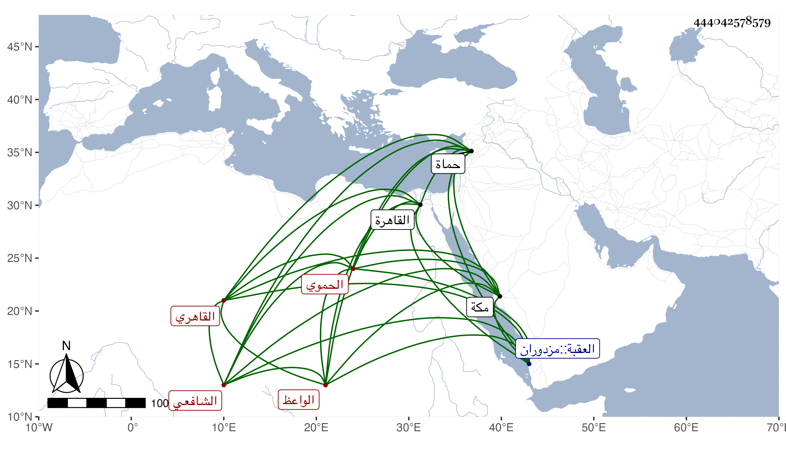

0902Sakhawi.DawLamic.ITO20230111-ara1.EIS1600.444042578579
Biography ID: 444042578579
إبراهيم بن محمود بن عبد الرحيم بن أبي بكر بن محمود بن علي بن أبي الفتح الحموي الأصل القاهري الشافعي الواعظ الآتي أبوه وجده وابناه محمد ومحمود . ولد في ذي القعدة سنة خمس وعشرين وثمانمائة بحماة ونشأ بها فحفظ القرآن عند الشمس بن الرزاز في جامع السلطان والمنهاج وسمع على الشمس بن الأشقر ثم تحول صحبة أبيه إلى القاهرة في أول أيام الظاهر جقمق فسمع من شيخنا وفي البخاري بالظاهرية وقرأ على السيد النسابة في الفقه والحناوي في العربية والعز عبدالسلام البغدادي في الحديث وغيره والتقي الحصي الحاجبية وبعض المتوسط وإمام الكاملية في آخرين وسلك طريق جده في الوعظ وحصل له قبول بين بعض العوام وكثير من النسوة وخطب بالأشرفية برسباي وحج في سنة اثنتين وخمسين ثم بعدها وعمل هناك ميعادا وهو خير نير حسن الملتقي كثير التواضع والأدب حسن القراءة في الميعاد زارني مرارا وتيمنت بدعائه وسافر هو وولده وعيالهما مع خوند زوجة الأتابك وابنة الظاهر إلى مكة في سنة ثمان وتسعين فأدركته منيته في توجهه قبل سطح العقبة يوم الأحد ثامن عشر شوال منها وكثر الأسف عليه رحمه الله وإيانا ونفعنا به .
